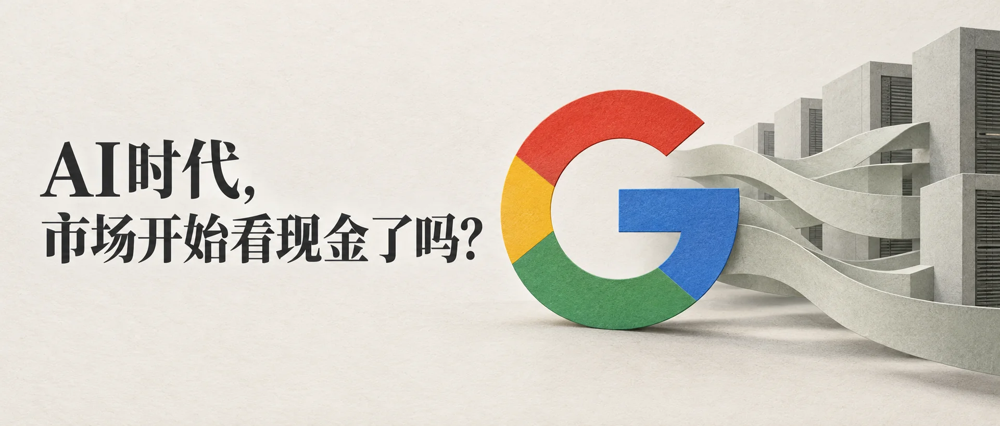
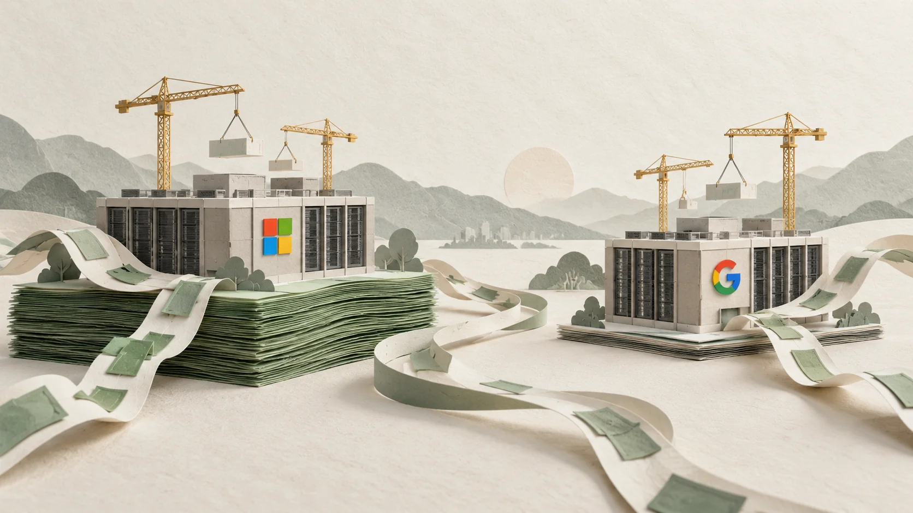

On October 29, Google shares fell about 13%, their biggest one-day decline since the company went public.
Yet some of the quarterly numbers did not look bad. Revenue grew 25% year over year to $127.58 billion; Google Cloud revenue more than doubled, with a backlog of roughly $560 billion. Three months earlier, Meta had shown a similar contrast: record revenue, up 28% year over year, but a share price that fell about 10% in after-hours trading.
In coverage of both sell-offs, the same term kept appearing: free cash flow.
When we focus on revenue and EPS, we may be missing a more basic question: where did the money go?
Free cash flow is fairly straightforward: cash generated by operating activities, minus capital expenditures. The cost of an investment can be spread over several years through depreciation, but the cash has already been spent. And right now, tech giants are pouring tens of billions of dollars into GPUs, TPUs, and data centers.
It Is Not Just Negative. It Is Deteriorating Too Quickly.
Before writing this, I thought Meta's free cash flow had already turned negative in Q2. Looking at its financial report, I realized it was still positive at $784 million, just 91% lower than a year earlier. It only turned negative in Q3, falling to minus $2.12 billion. Google's situation was more pronounced: Q3 free cash flow was minus $9.07 billion, compared with market expectations of around minus $2.7 billion. Meanwhile, its long-term debt rose from $21.6 billion to $125.1 billion in a year.
Perhaps what the market is punishing is not simply negative free cash flow, but the speed of its deterioration and the spending that still seems to have no end in sight.
Of course, cash flow was not the only issue in either sell-off. Google missed both revenue and earnings expectations for the first time in nearly four years, while search advertising growth slowed from 19% to 12%. Meta also faced an EPS miss and weaker guidance. More precisely, free cash flow acts as an amplifier. When cracks appear in the fundamentals, it can make the market's reaction much larger.
The Same-Day Comparison: Microsoft

What really made me start paying attention to cash flow was Microsoft, which reported on the same day.
Microsoft's capital expenditures also rose sharply, up 30% year over year to $45.2 billion, while free cash flow fell 27%. But it was still positive at $18.6 billion, and better than expected. Google fell 10% in after-hours trading, while Microsoft rose about 5%.
Both companies are investing enormous sums in AI infrastructure. The difference is how much of that spending their existing businesses can support with the cash they generate. Microsoft still had substantial free cash flow left over, while Google's cash spending had exceeded its operating cash flow and its debt was rising rapidly.
Oil, War, and More Expensive Money
There is another backdrop we cannot ignore: the war in the Middle East has not ended. Brent crude rose more than 10% in October, at one point reaching $116 a barrel. Oil pushed up inflation expectations. The Federal Reserve held rates steady in October, but two members favored a rate hike, while the 10-year Treasury yield remained near 5%.
More expensive money does not affect every company in the same way. Companies with strong operating cash flow generally have more room to invest; companies that rely more heavily on borrowing face higher financing costs. The same data center needs to earn more to make the investment worthwhile. And when future cash flows are discounted back to today at a higher rate, those returns that have yet to materialize are worth less than before.
But I do not want to make that causal chain sound too neat. If interest rates were the main reason for the sell-off, it would be difficult to explain why Microsoft rose on the same day. And while oil remained expensive toward the end of October, long-term yields eased somewhat, because high oil prices also raised concerns about an economic slowdown.
So I prefer to think of it this way: oil is the backdrop, not the trigger. It raises the hurdle for everyone, making the market more sensitive to how much companies need to borrow and when returns might arrive. What actually triggered the sharp declines, though, was each company's own financial report.
Do Not Rush to a Conclusion
Still, I do not want to take the idea that “cash is king” too far.
Amazon's free cash flow also looked weak for extended periods in its early years, and AWS later showed that the spending had been worthwhile. Capital expenditure is an investment; it should not simply be treated as a loss. Of Google Cloud's roughly $560 billion backlog, the company expects to recognize more than half as revenue within 24 months. If that happens, today's negative free cash flow may simply be the upfront cost of future growth.
Perhaps what the market really cares about is whether the return is visible. Microsoft was not punished just because its free cash flow was positive. Azure's revenue growth also made it easier to see what the spending was buying. Google's cloud business is strong, but search is slowing, and the market is asking whether the new business can fill the gap left by the old one.
I used to focus on revenue growth and whether EPS beat expectations. Now I take another look: how much of this investment can be covered by cash the company earns itself, and how much needs to be supported by borrowed money?
Ten years from now, will we look back at today's negative free cash flow as a sign of a bubble, or as the down payment on the next generation of infrastructure? I have not figured that out yet.
Profits can tell a story. But eventually, it has to come back to cash.
This article is a personal learning record and does not constitute investment advice.